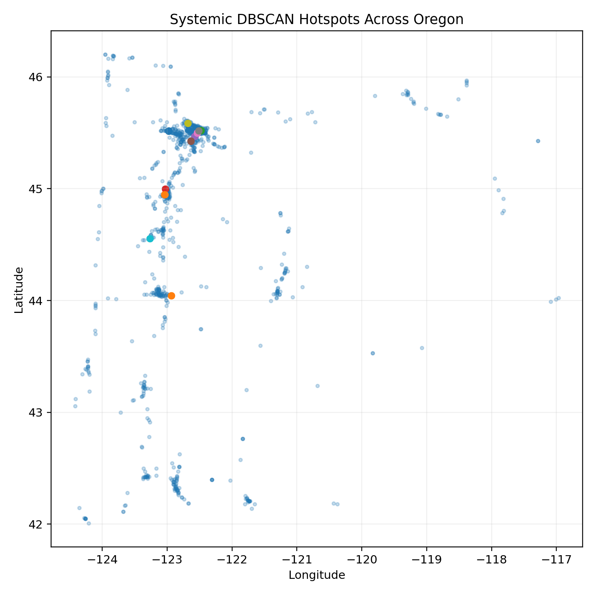
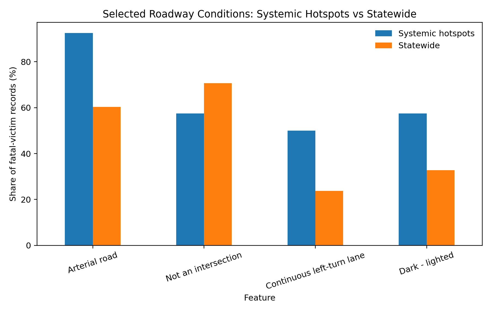
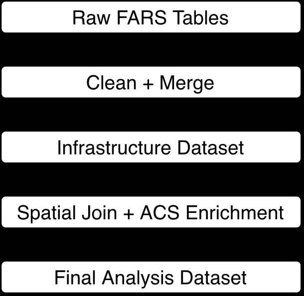
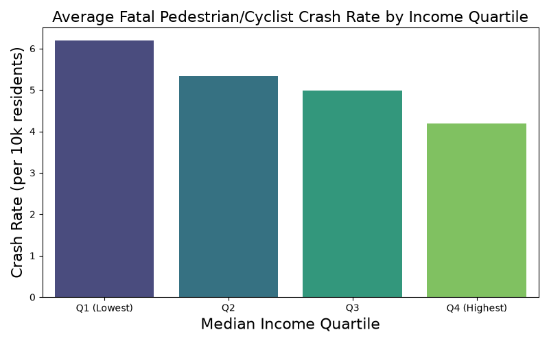
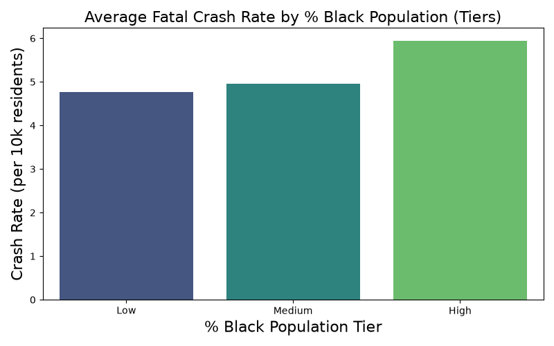

Key figures from the analysis: where crashes cluster, what the pipeline looks like, and how hotspots compare to the statewide baseline.

DBSCAN clustering on 2015–2024 fatal-crash coordinates surfaced 15 candidate spatial clusters; filtering to locations with at least two distinct crash incidents left 11 systemic hotspots (highlighted markers), concentrated along the I-5 corridor from Portland through Eugene.

Systemic hotspots skew toward arterial roads and away from intersections and continuous left-turn lanes, relative to the statewide fatal-crash mix.

Two-stage pipeline: raw FARS tables are cleaned and merged into an infrastructure dataset, then spatially joined to Census tracts and enriched with ACS demographics.

Census tracts represented in the fatal-crash data show a weak but statistically significant skew toward lower median household income.

Crash tracts also show a weak but significant skew toward higher Black population share, one input into the project's equity discussion.